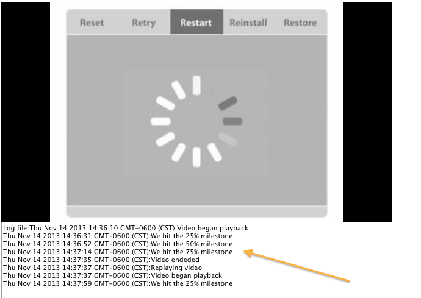

You can use the following code sample to work with the player message bus and message bus events.
The code sample includes multiple client web pages or views illustrating each feature and a seventh code sample that shows all the features working in combination. To implement each client page, you will need all the standard elements that you normally use such as your API Key, pcode, and so forth.
To explore these code sample views in GitHub, go to:https://github.com/ooyala/code-samples/blob/master/application/views/Secure_XDR_GoogleIMA/message-bus.php and https://github.com/ooyala/code-samples/blob/master/application/views/Secure_XDR_GoogleIMA/message-bus-advanced.php.
One important feature of Player V3 is its message bus event handling mechanism. This code sample includes the use of the V3 message bus to implement some event handling functions.
message_bus.php - Used for the set up of event handling.
message_bus_advanced.php - Illustrates the set up of event handling and the display of event milestones in an area beneath the player.
These files implement event handling code to demonstrate the following:
Video start and play
Video pause
Video reached 25% milestone
Video reached 50% milestone
Video reached 75% milestone
Video complete
Ad break started
Ad request made
Ad played through 100%
Ad break finished
Here is a portion of the code for handling these types of events from the simple_milestones.js file. In this code snippet, we subscribe to the PLAYING event. This javascript file uses the CONTENT_TREE_FETCHED, PLAYING, PLAYHEAD_TIME_CHANGED, and PLAYED events. For a full list of the message bus OO.EVENTS that you can use in your code, see Player Message Bus Events.
this.mb = window.mb;
.
.
.
this.mb.subscribe(OO.EVENTS.PLAYING, "func2", function (eventName, arg1, arg2) {
if (videoEnded) {
// Reset all values
// We are asuming we hit replay on the same video
videoStarted = false;
_25per = false;
_50per = false;
_75per = false;
videoEnded = false;
write("Replaying video");
}
.
.
.
In the message_bus_advanced.php file we provide a div id called logName to create a text area where we display the milestone events collected from the simple_milestones.js. In this script we subscribe to OO.EVENTS.PLAYING and use OO.EVENTS.PLAYHEAD_TIME_CHANGED to account for scrubbing. When you run the sample, you should see the output of the event handling tasks from the .js logic written to the screen, like so:
